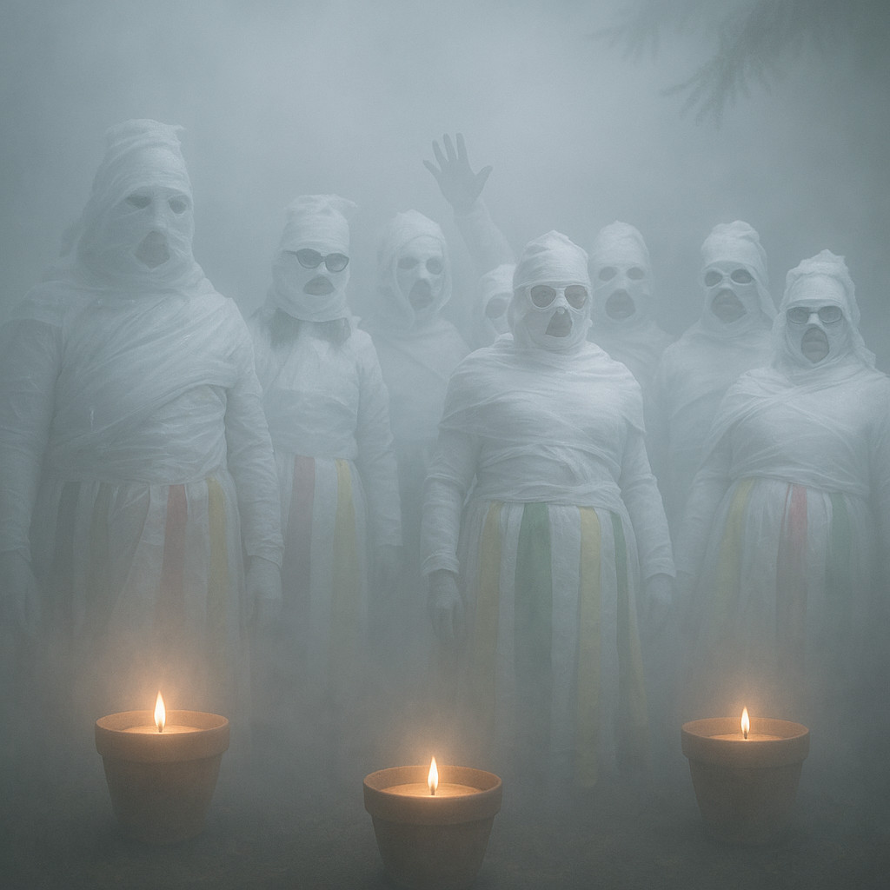
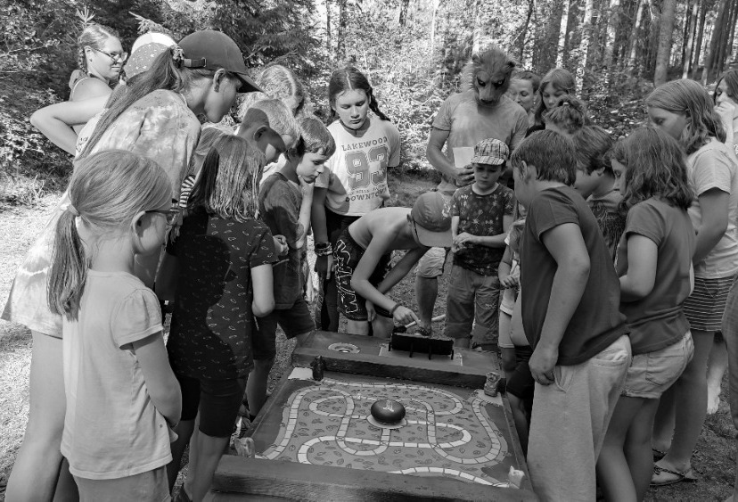

Sedelská pravda
Fakta, názory a konspirační teorie bez repelentu
Fakta, názory a konspirační teorie bez repelentu

V pondělí byla u shořelého skladu za Sedlem zadržena Marie Zilvarová, drobná žena ve středních letech, která podle svědků podezřele kroužila kolem místa záhadného požáru. Právě tam, kde bylo nalezeno ohořelé tělo neštastného Jakuba K.
Podle policie Zilvarová nebyla schopna vysvětlit, co tam dělala. Její verze o tom, že se tam jen náhodou prochází, vyvolává spoustu otázek. Proč tam byla v pracovním oblečení? A proč měla v batohu staré nářadí a prázdný kanistr? Ostatně její osoba je silně nedůveryhodná. V obci je nechvalně známá a její jméno se objevuje i v interních záznamech policie jako osoba „potenciálně riziková“. Zilvarová má totiž bohatou a — slušně řečeno — barvitou minulost.
Pevnostní areál Slavonice je unikátní ukázkou československého pohraničního opevnění vybudovaného v letech 1935–1938 jako součást obranné linie proti možnému vpádu z nacistického Německa. Nachází se přibližně dva kilometry od města Slavonice v malebné krajině zvané Česká Kanada.
V areálu najdete jedenáct rekonstruovaných lehkých bunkrů typu řopík vz. 37 (typy A, C a D) a jeden typ 36‑C, včetně palebných a pozorovacích průseků, protitankových a protipěchotních překážek dlouhých téměř 200 metrů. Dva bunkry jsou veřejně přístupné ve stavu mobilizace 1938 a ve stádiu studené války (1963). Interiéry obsahují originální kulomety, pušky, samopaly, pistole, funkční ventilátory, periskopy i vojenskou výstroj z různých dob.
Celým areálem vede naučná stezka o délce 2,5 km s 13 zastaveními, která návštěvníky provede historií opevňování Československa, lokálními zajímavostmi a taktickými detaily obranné linie na Slavonicku. Průvodce navíc pomáhá oživit bojové prostředí: návštěvníci si mohou vyzkoušet mechanizmus skutečných kulometů a periskopy.
Každý rok se tu koná tradiční bojová ukázka „Přepadení řopíků 1938“, která přibližuje dramatické události z doby mobilizace. Scénky s historickou výzbrojí, uniformami, granáty a kulomety vytvářejí autentický zážitek pro návštěvníky.
SEDLO – Úterní noc se na místním hřbitově nesla v duchu egyptského šílenství. Skupina podivně nadšených dospělých, kteří si říkají „Synové a dcery přechodu“, se oblékla do toaletního papíru a uspořádala rituální mumifikační tančírnu mezi hroby.
Podle svědků byl celý prostor osvícen svíčkami v keramických květináčích a účastníci v rozličném stádiu zabalení do papíru se pokoušeli tančit „posmrtný tanec radosti“, zatímco z přenosného reproduktoru zněly staré egyptské popové hity.
„Myslela jsem si, že se mi vrátila babička,“ sdělila nám obyvatelka Sedla, která šla na hřbitov zalít květiny a našla tam křepčící mumie. „Bylo to zvláštní, ale vlastně docela vtipné. Jen jsem se bála, že mi někdo ukradne květináč s muškáty.“
Zásah policie přišel krátce po půlnoci. Přivolaná hlídka se nejprve pokoušela mumie slovně uklidnit, ale poté, co jedna z nich začala předčítat z „Knihy mrtvých“, došlo ke zklidnění situace za použití obecní hasicí techniky.
Místo klasické pokuty bylo členům spolku uloženo vykonat veřejně prospěšné práce s výchovným přesahem. Podle radnice budou v následujících týdnech:
Mluvčí skupiny, paní H.H. (redakce jméno zná), se hájila slovy: „Měli jsme jen potřebu vyjádřit úctu k minulosti... a trochu se vyvázat ze současnosti.“
Obec zatím zvažuje, zda nevyhradit pro podobné „rituály“ severní část pole u křížku, kde už nyní parkují tři karavany a jeden papírový sarkofág.
Podle školních záznamů z archivu místní základní školy byla Marie v dětství často trestána za drobné přestupky, útěky z domova a opakované záškoláctví. Navíc figuruje i v případu krádeže vycpaného medvěda ze školního kabinetu přírodopisu, který se našel v lese za obcí, kde vyděsil učitelku mateřské školky a způsobil paniku mezi dětmi. Následkem čehož měla místní prádelna plno velkého i malého prádla.
„Byla to taková známá firma. V kolektivu oblíbená, ale kde se objevila, tam se něco stalo a nikdo ji však nikdy nic nedokázal.“ vzpomíná paní M. K., která ji učila v deváté třídě.
„Vždycky se kolem ní motalo spousta mladíků, kteří to nakonec schytali. Ona se jen smála a dělala, že nic.
Redakci se podařilo zjistit, že Marie byla spatřena i v blízkosti dalších nedávných incidentů – například v okolí Bídy, pouhý den před osudnou střelbou. Když pak později poskytla výpověď, tvrdila, že jen sbírala borůvky. Někdy je těch náhod zkrátka až moc.
A právě proto se místní ptají: nehraje Marie Zilvarová ve všech těchto událostech nějakou roli? Není to ona, kdo tahá za nitky v pozadí, zatímco ostatní plní titulky? Neexistuje sice žádný přímý důkaz, ale… není už těch náhod trochu příliš?
Je také možné, že Marie Zilvarová má čisté svědomí. Konečně, v Sedle se říká, že „kdo nic nedělá, nic nezkazí“. Ale její minulost a okolnosti zadržení vyvolávají spoustu otázek. Proč byla na místě požáru? Co dělala s prázdným kanistrem? A proč se zdá, že se snaží vyhnout odpovědím? Je možné, že se zase jen ocitla na špatném místě ve špatný čas? Tak jako vždycky?
Je to už několik let, co se digitální džungle Jumanji naposledy rozezněla hlasem bubnů. Tentokrát se ale neozývá z herní konzole, ani z deskovky zapomenuté na půdě. Země je vydává sama – tlumeně, hluboko, jako by ji někdo pomalu rozezníval zevnitř. Bubnování se šíří mezi stromy, v ozvěnách kanalizačních potrubí, dokonce i skrze kmeny na školním dvoře. Neptá se, neprosí – svolává. V novém snímku „Jumanji: Návrat do říše snů“ česká režisérka Eliška Vondrová přenáší diváky do světa, kde rostliny cítí, mravenci přemýšlejí a minulost není minulostí, ale živým organizmem.
Džungle čekala dlouho a bubny duní pro ty, kdo se už nevejdou do běžného dne. A tak se skupina dětí, která by se normálně nepotkala ani na školním hřišti, ocitá ve světě
Jumanji. Jako by se džungle sama rozhodla svolat shromáždění nejrůznějších věků a povah.
Vedle sebe tak kráčí batole s plyšovým medvídkem, ostýchavý sběratel brouků, dvojčata komunikující jen pohledem i dívka, která se nebojí ničeho, kromě vlastního stínu. Společně musí čelit nástrahám hlubokého deštného pralesa, kde čas běží pozpátku a stromům se zdají sny.
Vrchol filmu přichází ve scéně napadení tábora lidožravými mravenci velikosti dětské pěsti. Jejich organizace, precizní strategie a děsivý klid ve chvíli útoku působí, jako by se divák díval na dokument z apokalypsy přírody. Kamera dlouho zůstává bez hudby – slyšíme jen drcení listí, vrzání chitinu a tlumené výkřiky. Působivé. Děsivé. Nečekaně hluboké.
Přesto nejde o čistou akční jízdu. Vondrová pracuje s tématy ztráty, paměti a identity. A právě zde se objevuje prvek, který novinářům nedá spát – záhadná postava, kterou nikdo ve filmu fyzicky nevidí, ale všichni na ni reagují. Postava, jež nikdy nepromluví, a přesto ovlivňuje vše, co se ve světě Jumanji stane.

Na tiskové konferenci jsme se režisérky zeptali:
„Ve filmu se často mluví o Neviditelném poutníkovi, ale nakonec nebyl nikdy odhalen. Je pravda, že tuto roli ztvárnil váš manžel?“
Eliška Vondrová se na chvíli odmlčela, usmála se a řekla:
„Byl jako mech na kameni. Tichý, ale bez něj by se vše rozpadlo.“
Na další otázky už odmítla odpovídat a jen se tajemně usmívala.
Celým areálem vede naučná stezka s 13 zastaveními, která návštěvníky provede historií opevňování, lokálními zajímavostmi a taktickými detaily obranné linie na Slavonicku. Návštěvníci si zde mohou vyzkoušet mechanizmus skutečných kulometů a zacházení s periskopy.
Každý rok se tu koná tradiční bojová ukázka „Přepadení řopíků 1938“, která přibližuje dramatické události z doby mobilizace. Scénky s historickou výzbrojí, uniformami, granáty a kulomety vytvářejí autentický zážitek pro návštěvníky.
„Za takové vysvědčení se dává pár facek!“ rozčiluje se otec.
„Máš pravdu tati, pojď, pan učitel bydlí hned za rohem.“
Možná jsi to už někdy zažil – tmavá ulička, divný týpek a žádný prostor na únik. Jindy si namachrovaná banda troubů myslí, že tvůj kamarád je boxovací pytel. Ano, svět je plný nebezpečí a ne z každého se dá vykecat. Někdy ti nezbyde nic jiného, než se postavit na zadní a ukázat, že nejsi jen další oběť. V takovém případě je dobré vědět, jak alespoň sevřít pěst.
Sebeobrana však není jen o úderech a kopancích. Ve skutečnosti to začíná mnohem dřív – správným postojem, klidným hlasem a schopností nedostat se do problémů. Sebeobrana tě učí rozpoznat nebezpečí včas a zmizet dřív, než začne jít do tuhého. A když už dojde na lámání chleba (nebo nosu), pomůže ti bránit se chytře – s co nejmenší námahou a co největší efektivitou.
Pokud tě přepadnou v jídelně kvůli poslednímu borůvkovému knedlíku? Pak se bij jako lev, protože není nic horšího, než když ti někdo sebere tvůj oblíbený dezert! 😄
Dnes opdoledne si procvičíme pár základních technik, které ti třeba jednou pomohou. A pokud ne, tak určitě zahřejí a pobaví.
Klidné ráno v chalupě na kraji lesa narušil podivný telefonát. „Budulínek zmizel,“ hlásila plačící babička. Měla jsem podezření, že v tom bude liška. Ta se v okolí už několikrát motala — slibovala dětem svezení na ocase výměnou za hrášek. Tentokrát zašla dál.
Na místě činu jsem našel nedojedené zbytky polévky, otevřené okno a na stole pár kuliček hrachu. Žádné stopy boje, jen dětská židlička převrácená dozadu. Klasický únos.
Začal jsem výslechy. Děda nic neviděl, byl na trhu. Babička tvrdí, že Budulínkovi opakovaně říkali, ať nikomu neotvírá. „Ale liška mluvila vždycky tak mile,“ vzlykala. Zvířátka z lesa potvrdili, že viděli červený ocásek mířit k doupěti u starého dubu.
Večer jsme vyrazili s posilami — tři bubny a hodně hluku. Liščí doupě se otřásalo, divže se celé nezhroutilo. Po chvíli vylezla liška — uražená, ale neškodná. „Já ho jen učila zodpovědnosti,“ tvrdila. Budulínek vyšel sám, trochu špinavý, ale v pořádku.
Případ uzavřen. Budulínek dostal za trest domácí vězení a liška musí na pouti vozit děti na ocásku zadarmo. A já? Já si zase jednou mohu oddechnout a jít se pořádně prospat.
Na jazyku slovo žádné,
přesto se hýbu stále.
Jsme pár, co tě vždy nese,
v dešti, sněhu i na plese.
Název: Sedelská pravda
Vydavatel: Sedlo Media Group, s.r.o.
Adresa: Sedlo 47, Česká republika
Email: info@sedelska-pravda.cz
Telefon: +420 123 456 789
Šéfredaktorka: Karolína Bukovská
Výkonný redaktor: Michal Bukovský
Redakce: Lucie a Bohumil Borešovi
Grafická úprava: Michal Bukovský
Tisk: Česká Tiskárna a.s., Nová Bystřice
Datum vydání:
Číslo vydání:
© 2025 Sedlo Media Group. Všechna práva vyhrazena.
Jakékoli šíření obsahu bez svolení vydavatele je zakázáno.